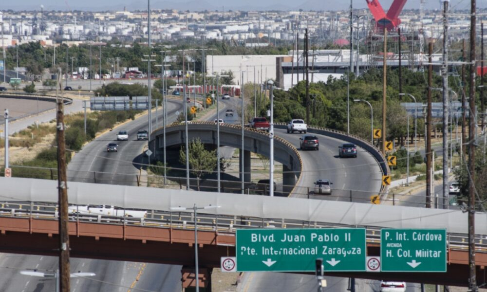

Estas son las noticias del día
Cd. Juárez lidera proyecto de innovación ecológica e infraestructura urbana moderna
Ciudad Juárez, Chih. — Autoridades locales y grupos comunitarios anunciaron hoy la inauguración del nuevo Parque Tecnológico y Ecológico Fronterizo, un desarrollo urbano de vanguardia diseñado para revitalizar la imagen urbana de la ciudad.
El proyecto abarcará más de 40 hectáreas de espacios verdes, ciclovías interconectadas y zonas de energía limpia. Además, contará con instalaciones diseñadas para impulsar el talento tecnológico juvenil en la frontera.
Líderes de la comunidad destacaron que este avance representa un paso firme hacia una ciudad más verde, segura y conectada.
